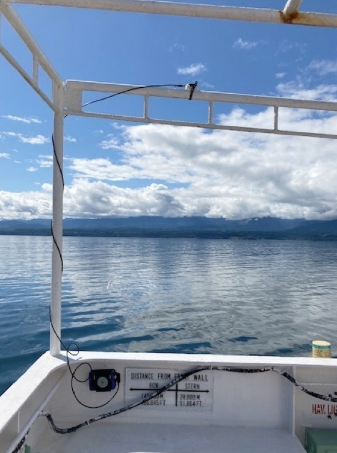
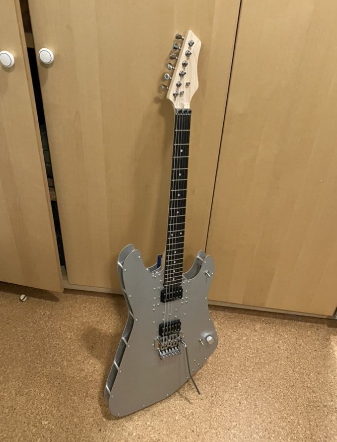
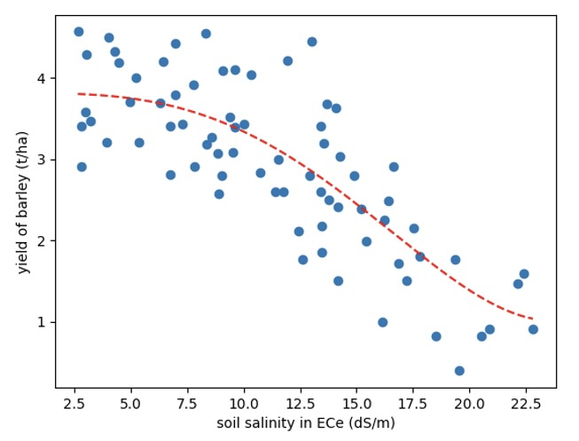
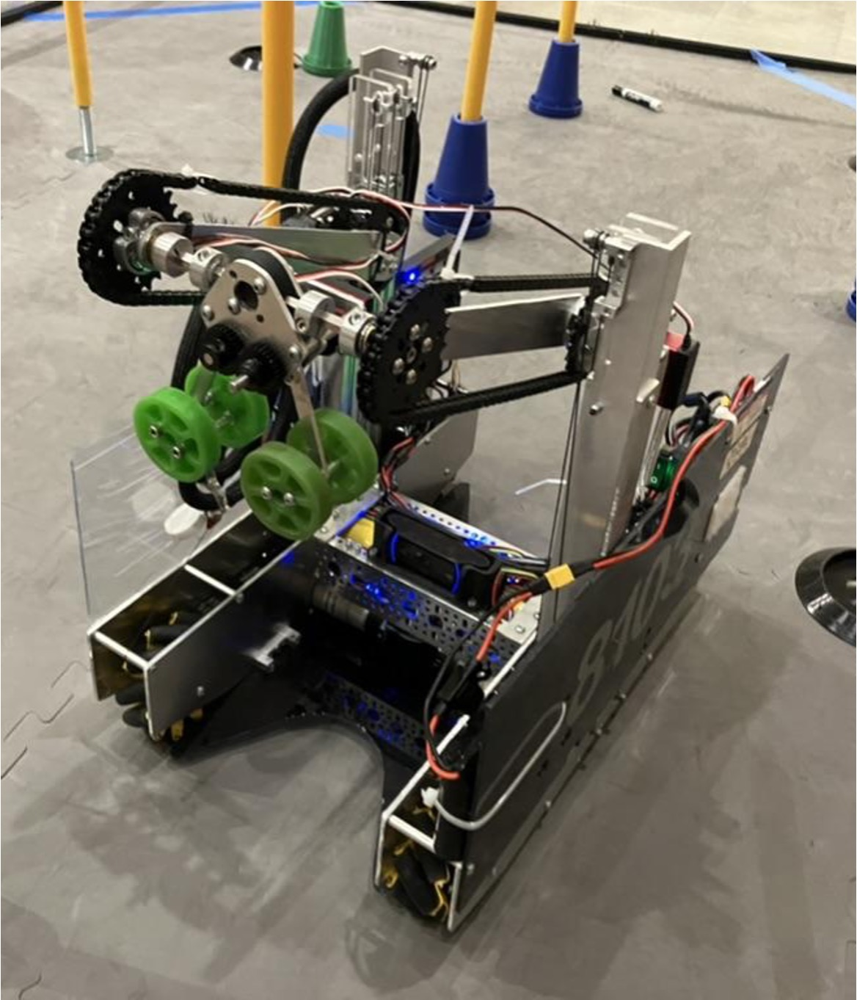
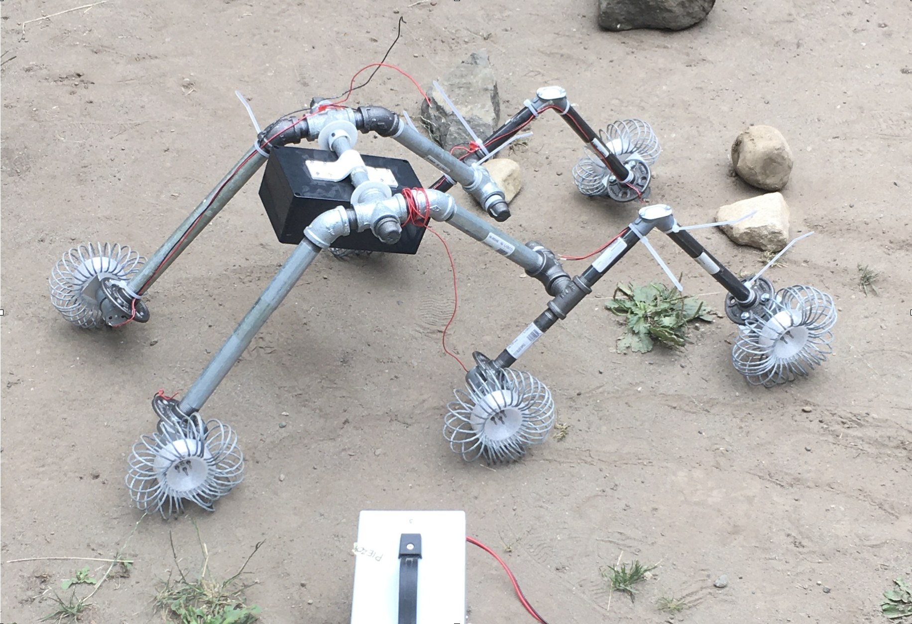
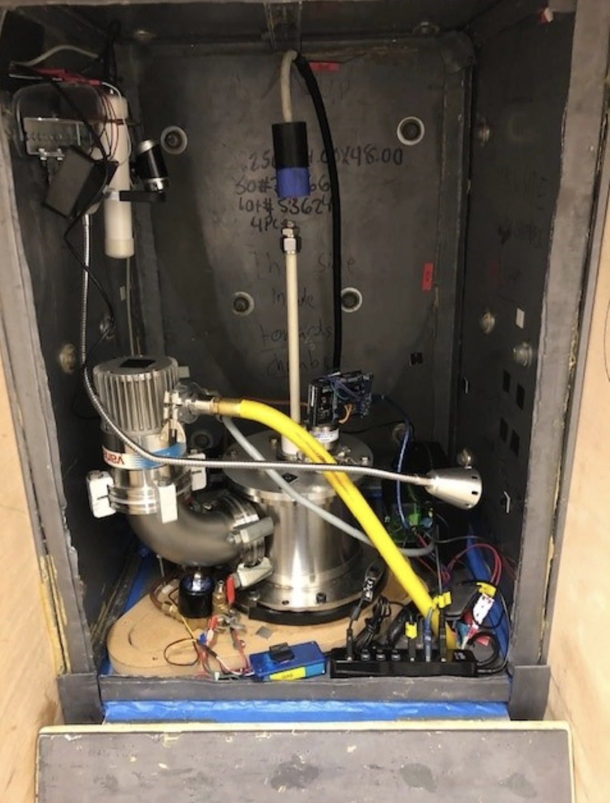
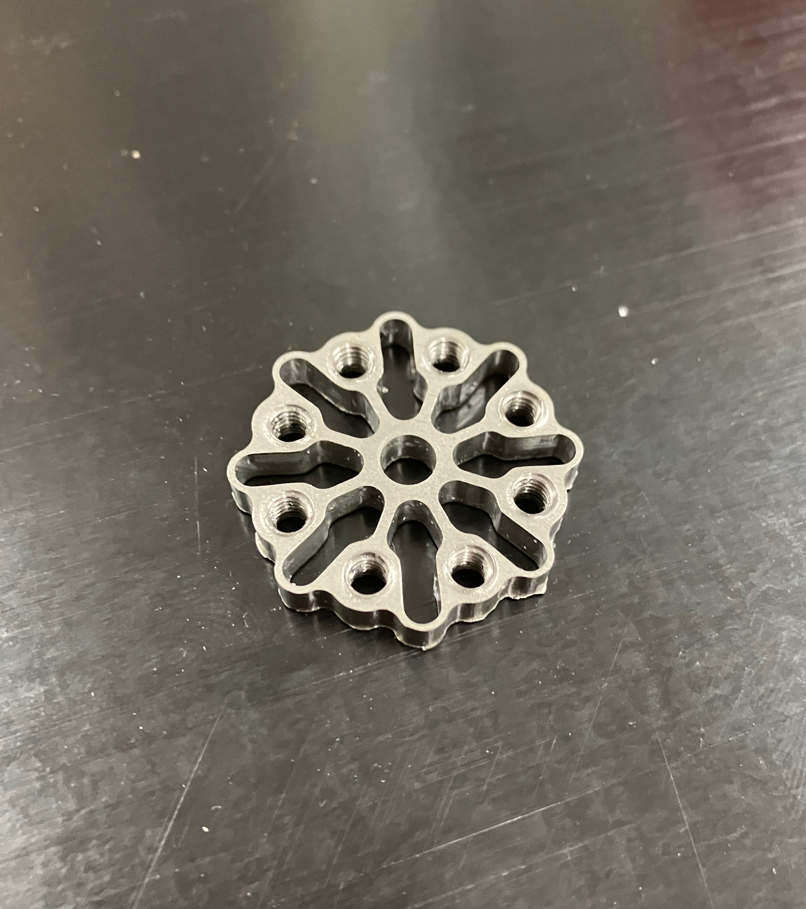

Click on each project to learn more
GPS HolderDesigned and 3D-printed a GPS mount for a ship rail. Built for a captain's custom use case; parts are in active use today. |

|
Electric GuitarBuilt an ergonomic electric guitar body from 3 laser-cut aluminum plates. Designed in Autodesk Inventor after prototyping in cardboard; all electronics as well as neck mount to the front plate for easy servicing. |

|
Genetic ProgrammingBuilt a Python library for tree-based genetic programming. Used it to perform symbolic regression on datasets—automatically deriving equations to fit data. |

|
FTC RoboticsSpent 4 years designing and building FTC robots. As fabrication lead, machined parts for drivetrains and custom mechanisms. |

|
RoverDesigned and built a rocker-bogie rover inspired by NASA’s Mars designs. Created airless wheels from helical steel coil for rough terrain; tested successfully on dirt, grass, and rock. |

|
FusorHelped with project to build a working nuclear fusion reactor. Focused on high-voltage systems and designed a current measurement tool for diagnostics. |

|
Compliant MechanismsDesigned and machined compliant shock absorbers from Delrin and stainless steel for FTC robot applications. |

|